Emergency & Critical Care · First Aid for Cattle & Buffaloes
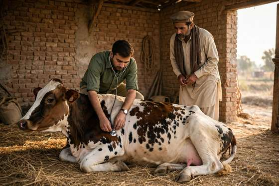
A veterinarian attending an emergency case — first aid buys time, the vet saves the animal
⚠ First aid only — not a substitute for emergency veterinary care. This guide teaches what a farmer can do in the first minutes of an emergency. It does not replace examination and treatment by a qualified veterinarian. In any emergency, call a qualified veterinarian immediately — then give first aid while you wait.
In a cattle emergency, the first minutes decide whether the animal lives or dies. Severe bloat can kill a cow in a very short time, a cow in difficult labour can lose her calf, and heavy bleeding can become fatal before help arrives. A farmer who stays calm, acts quickly and calls the veterinarian at once gives the animal the best chance.
This guide covers the golden minutes, how to assess an emergency patient using the ABCs, and the common emergencies every cattle farmer should know: bloat, milk fever, dystocia, severe bleeding, fractures, poisoning, heat stroke and snake bite. It also covers the farm emergency kit, safe transport and the red-flag signs that always mean calling the veterinarian immediately.
Introduction — The Golden Minutes
The "golden minutes" are the short time after an emergency begins, when quick first aid makes the biggest difference. In many cattle emergencies the animal cannot wait: gas keeps building in bloat, blood keeps flowing from a wound, and a calf in a difficult birth runs out of oxygen. What you do in the first minutes — and how fast the veterinarian is called — decides the outcome.
1
Stay calm(Panic wastes time and frightens the animal. Speak quietly, move slowly, and think before you act)
2
Protect yourself first(An injured, frightened or down cow can kick, crush or charge. Never stand directly behind a cow, and never put your face near its head)
3
Call a qualified veterinarian immediately(Call before you start first aid if possible — or send someone else to call while you help the animal)
4
Move other animals away(Keep the patient quiet and separate so other cattle do not disturb or injure it)
5
Note the time and the signs(When did it start? What did you see first? The veterinarian needs this information)
⚠ Safety first:
Approach a sick cow from the side, never from directly behind.
Restrain the animal gently with a halter or rope before examining it.
Keep children away from an injured animal.
If the animal is violent or the situation is unsafe, stay back and wait for the veterinarian.
Triage — The ABCs and Rapid Assessment
Triage means deciding quickly how serious the emergency is and what to do first. In every emergency, check the ABCs in order — Airway, Breathing, Circulation — before anything else. A problem with any of the ABCs is life-threatening.
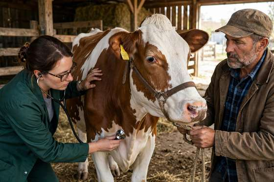
Triage — check the ABCs before anything else
A
Airway — is it open?(Look for choking, feed or mucus blocking the mouth or throat, and a stretched neck with noisy breathing. Clear visible material from the mouth only if it is safe to do so)
B
Breathing — is it normal?(Watch the chest and nostrils. Rapid, laboured, noisy or absent breathing is an emergency. Keep the animal's head and neck straight so air can move freely)
C
Circulation — is blood flowing?(Look for bleeding, feel the pulse, and check the gums — pale or bluish gums are a danger sign. Stop any bleeding with firm pressure)
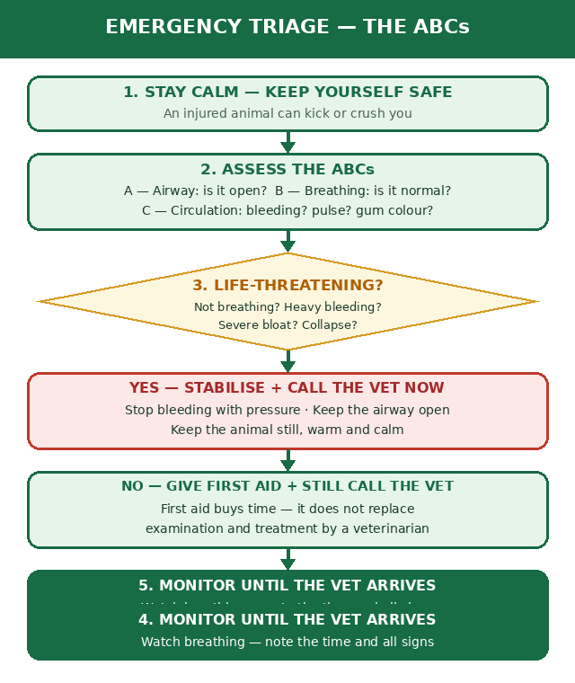
Emergency triage flowchart — assess, stabilise, call the vet, monitor
Rapid assessment after the ABCs: check whether the animal can stand, look for wounds, swelling or fractures, note the colour of the gums, and observe the animal's behaviour — dullness, restlessness, straining or collapse all tell the veterinarian something important. Report everything you observed when the veterinarian arrives.
Bloat — A Fast Killer
Bloat is the abnormal accumulation of gas in the rumen. The left side of the abdomen swells visibly, the cow becomes restless, stops eating and ruminating, and may breathe with difficulty. Severe bloat can kill a cow in a very short time because the swollen rumen presses on the lungs and heart.
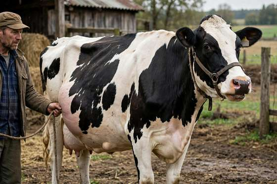
Bloat — a swollen left abdomen is the classic sign
Two types: in free-gas bloat the gas sits as a free pocket in the rumen, often caused by a blockage; in frothy bloat the gas is trapped in stable foam, often after eating lush legume pasture such as berseem or alfalfa. Frothy bloat is usually more difficult to relieve and needs veterinary treatment.
Signs of bloat:
Visible swelling of the left flank, which sounds drum-like when tapped
Restlessness, kicking at the belly, looking back at the flank
Stopped eating and ruminating; the cow may lie down and be unable to rise
Immediate first aid: keep the cow standing and walking slowly if it is able to move. Call a qualified veterinarian immediately. Do not delay — bloat worsens quickly.
What NOT to do: never attempt to puncture the rumen with a knife or trocar yourself — this is a veterinary procedure that must only be done by a qualified veterinarian. Do not drench the cow with home remedies, and do not force the cow to lie down.
Milk fever (hypocalcaemia) is a sudden drop in blood calcium, most often in high-producing cows around calving. The cow becomes weak, lies down and cannot stand. Without veterinary treatment she can slip into a coma and die — but with prompt treatment most cows recover.
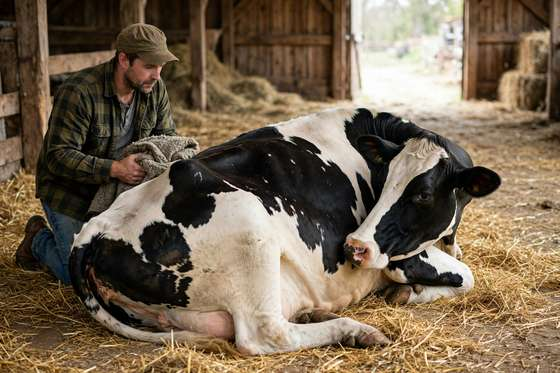
Milk fever — a downer cow, lying with her head turned toward her flank
Signs of milk fever:
Weakness and unsteady walking, then the cow goes down and cannot rise
Lying in sternal recumbency with the head turned toward the flank (an S-shaped neck)
Cold ears and dry muzzle; dull, sleepy appearance
Reduced gut sounds, constipation and low body temperature in later stages
Immediate first aid: keep the cow on soft, dry bedding and prop her up on her chest with her head held upright, so she does not roll onto her side or choke. Keep her warm and sheltered from sun, rain and cold. Call a qualified veterinarian immediately — milk fever is treated by the veterinarian to restore blood calcium.
What NOT to do: do not force the cow to stand, do not drag her, and do not drench her with liquids — a dull cow can inhale liquid into her lungs. Never give any injection or medicine yourself.
Dystocia means difficult or obstructed calving. It is one of the most common farm emergencies. The calf may be too large, in the wrong position, or the cow may be too weak to deliver. Quick, correct action saves both the cow and the calf — wrong action injures both.
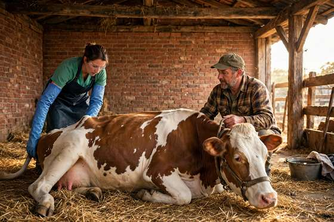
Dystocia — assist only when you know the calf's position; otherwise call the vet
When to intervene, and when to call the vet:
Call the veterinarian immediately if the cow has been straining strongly with no progress, if only one leg or only the head is visible, if the calf is in an abnormal position, if the waters broke long ago with no calf delivered, or if the cow is exhausted.
Assistance by the farmer is only reasonable when the calf is in a normal position (two forelegs and the head presenting together) and progress is being made.
Always wash your hands and arms and the cow's rear thoroughly with clean water and soap before any examination.
Gentle traction principles: pull only in line with the birth canal, only while the cow is straining, and with steady gentle force — never with sudden jerks, and never with machinery or vehicles. If the calf does not move with gentle traction, stop and call the veterinarian. Forcing a delivery can tear the birth canal, break the calf's bones or kill the calf.
What NOT to do: never pull forcefully, never use ropes tied to a tractor or vehicle, and never attempt to correct a malpositioned calf without training — a wrong correction can cause severe injury. If in doubt, call the veterinarian.
Severe bleeding can come from wounds, torn teats, broken horns or injuries from fences and other animals. Blood loss is life-threatening — the first aid goal is to slow or stop the bleeding until the veterinarian arrives.
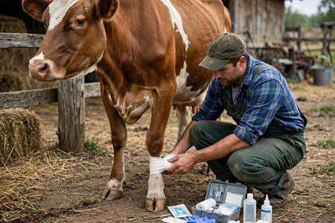
Severe bleeding — press a clean cloth firmly on the wound
Immediate first aid:
Press a clean cloth, gauze pad or folded towel firmly onto the wound and hold it there — do not keep lifting it to look.
Bandage the cloth in place with a firm (not tight) bandage. If blood soaks through, add more layers on top — do not remove the first layer.
Keep the animal calm and still, and keep the wound as clean as possible.
Call a qualified veterinarian immediately — deep wounds need cleaning, suturing and veterinary assessment.
What NOT to do: do not apply a tight tourniquet around a leg for a long time — it can destroy the tissues below it. Do not pour home remedies, powders or dirty materials into the wound. Do not try to stitch a wound yourself.
Fractures in cattle usually affect the legs, after falls, slips on wet floors, road accidents or kicks. A fractured leg is an emergency because the animal cannot stand, the broken bone can damage blood vessels and nerves, and a struggling animal makes the fracture worse.
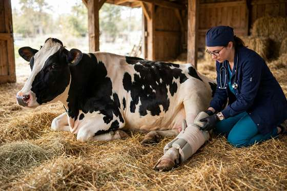
Fracture — immobilise the leg and keep the animal still
Signs of a fracture:
Sudden severe lameness or the animal refuses to bear weight on the leg
Swelling, abnormal angle or obvious deformity of the limb
Pain when the leg is touched; the animal may lie down and refuse to rise
Immediate first aid: keep the animal calm and still on soft bedding, and prevent it from struggling or trying to walk. Support the injured leg with padding and a light splint only if you can do so without moving the fracture — a padded board or thick cloth tied gently above and below the break can help. Call a qualified veterinarian immediately.
What NOT to do: never attempt to set or straighten a broken bone yourself. Do not force the animal to stand or walk, and do not tie a tight bandage around the fracture — it can cut off the blood supply.
Cattle can be poisoned by eating toxic plants, mouldy feed, urea fertiliser, pesticides, rat poison, lead paint or batteries, or by drinking contaminated water. Poisoning is an emergency because the animal often shows few signs until it is seriously ill.
Signs of poisoning:
Sudden illness in one or more animals, often after a feed or pasture change
Excessive salivation, teeth grinding, abdominal pain, bloat or diarrhoea
Muscle tremors, staggering, blindness or fits in severe cases
Sudden death without warning in the most severe cases
Immediate first aid: remove the animal from the source — move the herd off the suspect pasture or feed at once. Keep the animal calm and still, note exactly what it may have eaten or drunk, and keep the packaging, feed sample or plant sample to show the veterinarian. Call a qualified veterinarian immediately and describe the signs and the suspected poison.
What NOT to do: do NOT induce vomiting unless a veterinarian tells you to — vomiting can cause the poison to enter the lungs. Do not give home remedies, oil or milk by mouth to a dull or fitting animal. Do not wait to see if the animal recovers on its own.
Heat Stroke
Heat stroke occurs in hot, humid weather, especially in high-producing cows, dark-coated animals, and animals kept in direct sun without shade or water. Body temperature rises dangerously high, and the animal can collapse and die if not cooled quickly.
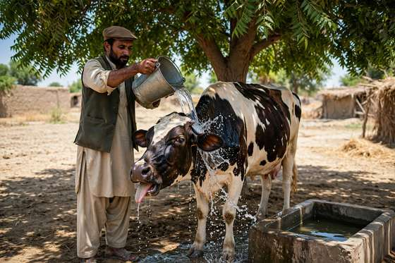
Heat stroke — move the animal to shade and cool it with water
Signs of heat stroke:
Rapid, open-mouth panting and drooling
Hot, dry skin; the animal stops sweating
Restlessness followed by weakness, staggering and collapse
Immediate first aid: move the animal into shade at once and pour cool (not ice-cold) water over the head, neck and body, or sponge it with wet cloths. Offer clean, cool drinking water in small amounts if the animal is alert and able to drink. Improve air movement with fans or by opening the shed. Call a qualified veterinarian immediately — heat stroke damages the internal organs even after the animal seems to recover.
What NOT to do: do not use ice-cold water, do not cover the animal with wet blankets in the sun, and do not force water into the mouth of a collapsed animal.
Snake Bite
Snake bite is a serious emergency on farms, especially in summer and at night. The bite is often on the face, muzzle or legs. The animal may show sudden swelling at the bite site, pain, restlessness, drooling, weakness or collapse.
Immediate first aid: keep the animal completely calm and still — movement spreads venom faster through the body. Keep the bitten area below the level of the heart if possible, and do not let the animal walk or struggle. Call a qualified veterinarian immediately and, if it is safe, note what the snake looked like — but never try to catch or kill the snake.
What NOT to do: do not cut the bite, do not try to suck out venom, do not apply a tight tourniquet, and do not apply herbal pastes or home remedies to the bite. These measures cause harm and waste the time needed to reach the veterinarian.
Emergencies in Newborn Calves
A newborn calf is at highest risk in its first hours of life. After a difficult birth the calf may be weak, slow to breathe or unable to stand. Quick attention in the first minutes saves calves.
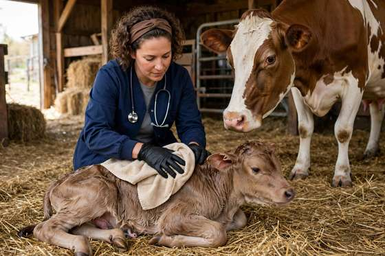
Newborn calf emergency — clear the airways, dry and warm the calf
Clear the airways: wipe mucus from the calf's mouth and nose with a clean cloth so it can breathe.
Stimulate breathing: rub the calf vigorously with a clean, dry towel — this also dries and warms the calf.
Keep the calf warm: place it on clean, dry straw in a sheltered place, away from cold and draughts.
Colostrum matters: the calf should receive its mother's first milk (colostrum) as early as possible — ask the veterinarian if the calf is too weak to suckle.
Call a qualified veterinarian immediately if the calf is not breathing normally, cannot lift its head, or does not attempt to stand.
Every cattle farm should keep a simple emergency kit in a dry box near the shed, so first aid can start immediately. Check the kit regularly and replace used or dirty items.
The farm emergency kit — keep it stocked and near the shed
Item
Use in an emergency
Clean bandages and gauze pads
Covering wounds and controlling bleeding
Cotton wool
Padding under bandages and splints
Adhesive tape
Securing bandages in place
Blunt scissors
Cutting bandages and cloth safely
Clean gloves
Protecting your hands and keeping wounds clean
Torch
Examining animals at night or in a dark shed
Thermometer
Checking body temperature when the vet asks
Clean rope and halter
Restraining the animal safely
Bucket, clean water and soap
Washing hands, wounds and the calving area
Blanket
Keeping a down or shocked animal warm
Padded board or thick cloth
Supporting a fractured leg
Veterinarian's contact details
Kept with the kit, so anyone can call for help at once
Transporting a Sick or Injured Animal
Sometimes the animal must be moved to a veterinary hospital or clinic. Bad transport can turn a treatable emergency into a fatal one — so move the animal only when the veterinarian advises it, or when there is no other way to get help.
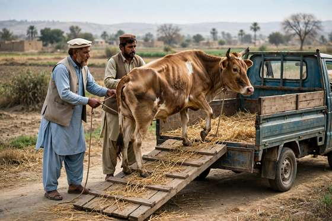
Transport — gentle loading, soft bedding, slow driving
Load gently: use a low, non-slip ramp; never force, drag or beat the animal onto the vehicle.
Bedding: spread thick, dry straw on the vehicle floor so the animal can lie down safely.
Space and air: give the animal room to lie down, keep it shaded, and allow air to circulate.
Drive slowly: avoid sudden braking, sharp turns and rough roads.
Travel with a helper: one person should stay with the animal to watch its breathing and keep it calm.
Downer animals: a cow that cannot stand should be moved on a flat, padded surface with several people lifting together — never drag her by the legs.
Red Flags — Call the Veterinarian Immediately
Some signs always mean an emergency. If you see any of these, call a qualified veterinarian immediately — do not wait to see if the animal improves.
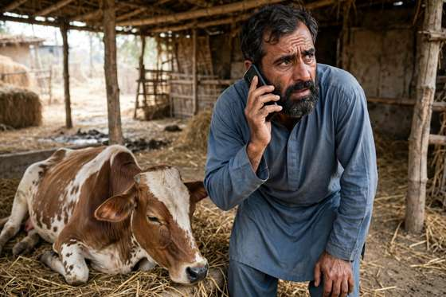
Red flags — call the veterinarian immediately, day or night
!
Not breathing, or severe difficulty breathing
!
Heavy or uncontrolled bleeding
!
Collapse, fits, or the animal cannot stand
!
Rapidly swelling abdomen (severe bloat)
!
Calving with no progress, or abnormal presentation
!
Suspected poisoning — sudden illness after a feed or pasture change
!
Snake bite, or sudden swelling of the face or muzzle
!
Obvious fracture, or a leg at an abnormal angle
!
Newborn calf not breathing, or unable to lift its head
!
Any animal that is suddenly dull, off feed and getting worse quickly
References
Merck Veterinary Manual — Emergency Medicine and Critical Care; Bloat in Ruminants; Hypocalcaemia (Milk Fever).
Radostits, O.M. et al. — Veterinary Medicine: A Textbook of the Diseases of Cattle, Horses, Sheep, Pigs and Goats (Elsevier).
Smith, B.P. — Large Animal Internal Medicine (Elsevier).
Jackson, P.G.G. — Handbook of Veterinary Obstetrics (Elsevier Saunders).
University extension resources — Penn State Extension, Dairy Cattle Emergency and First Aid; University of Wisconsin–Madison Extension, Dairy Cattle Health and Management.
Frequently Asked Questions
What is the first thing to do in a cattle emergency?
Stay calm and protect yourself first — an injured or frightened cow can kick, crush or charge. Move other animals away, approach the patient quietly from the side, and call a qualified veterinarian immediately. Then assess the ABCs: Airway, Breathing and Circulation. First aid buys time; it never replaces emergency veterinary treatment.
What are the ABCs of emergency assessment in cattle?
A stands for Airway — check that the airway is open and clear of feed, mucus or foreign material. B stands for Breathing — watch the chest and nostrils for normal, regular breathing. C stands for Circulation — look for bleeding, check the pulse and the colour of the gums. Any problem with the ABCs is life-threatening and needs a veterinarian immediately.
What first aid should I give a cow with bloat?
Keep the cow standing and walking slowly if it can, and call a veterinarian immediately — severe bloat can kill within a short time. Do not drench the cow with home remedies and never attempt to puncture the rumen yourself. Passing a stomach tube or using a trocar is a veterinary procedure and must only be done by a qualified veterinarian.
How should I manage a downer cow suspected of milk fever?
Keep the cow on soft, dry bedding, propped up on her chest with her head held upright so she does not lie flat or choke. Keep her warm and sheltered, do not force her to stand or drag her, and call a veterinarian immediately. Milk fever is treated by the veterinarian to restore blood calcium — home treatment is not safe.
When should I call a veterinarian during calving?
Call a veterinarian immediately if the cow has been straining strongly with no progress, if only one leg or only the head is visible, if the calf is in an abnormal position, if the waters broke long ago with no calf delivered, or if the cow becomes exhausted. Never pull forcefully — incorrect traction injures both the cow and the calf.
Can I give medicine to my cow at home in an emergency?
No. Do not give any medicine, injection or home remedy in an emergency unless a qualified veterinarian tells you to. The wrong medicine, or the wrong amount, can kill the animal or make the emergency worse. Your job is first aid — stop bleeding, keep the animal calm and safe — and call the veterinarian immediately.
What should I keep in my farm emergency kit?
Keep clean bandages and gauze, cotton wool, adhesive tape, blunt scissors, clean gloves, a torch, a thermometer, clean rope, a bucket, clean water, soap and a blanket in a dry box near the shed. Check the kit regularly and replace used or dirty items. Keep your veterinarian's contact details with the kit so anyone can call for help.
گائے کے ہنگامی کیس میں سب سے پہلے کیا کرنا چاہیے؟
سب سے پہلے پرسکون رہیں اور اپنی حفاظت کریں — زخمی یا ڈری ہوئی گائے لات مار سکتی ہے۔ دوسرے جانوروں کو دور کر دیں، فوراً کسی مستند ویٹرنری ڈاکٹر کو بلائیں، پھر جانور کی سانس، ہوا کی نالی اور خون بہنے کی حالت دیکھیں۔ فرسٹ ایڈ صرف وقت دیتی ہے، ڈاکٹر کا علاج اس کی جگہ نہیں لے سکتا۔
Key Takeaway
In a cattle emergency, minutes matter: stay calm, protect yourself, call a qualified veterinarian immediately, and give simple first aid while you wait — check the ABCs, stop bleeding, keep the animal calm, warm and still. First aid buys time, but only a veterinarian can treat the emergency. Keep your emergency kit stocked and your veterinarian's contact details close at hand. Follow current local veterinary authority guidance.